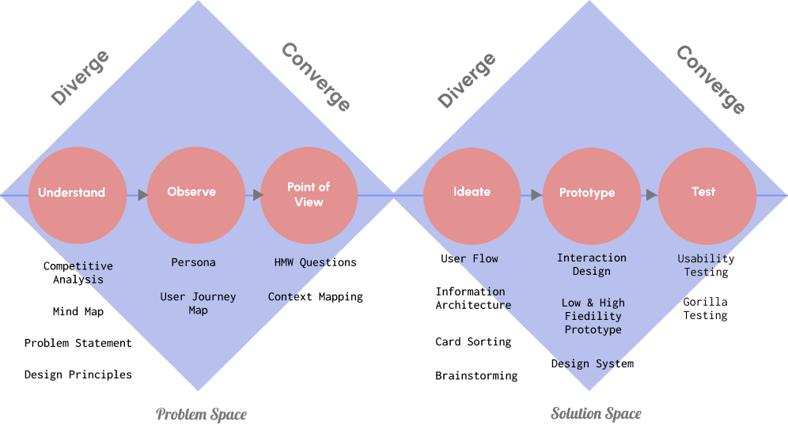

K.Deepak Madhana Raj
Ux/UI designer
I create User Experience for products, by understanding the problem, user needs and matching the business requirements using common sense, user psychology and creativity.
In my previous role I worked as Project Delivery Lead.
My UX Process
User experience
When a user interacts with a product, the emotions that he experiences while completing a task, the frustrations he faces, based on the look and feel of the product, finally the product solving the problem that is intend for its use is User Experience. User Experience should be usable, understandable, findable, reliable, contextual, functional and delightful.

Design Thinking Process
I use Design Thinking(non-linear approach) as my process to create user experience for the projects I work. I follow the phases Empathize, Define, Ideate, Prototype and Test. And use design thinking methods for each phase like problem statement, empathy map, persona, user journey map, define POV(Point of view), mind maps, Task Flow, IA, Card Sorting, prototype, interaction design and visual design. Visit my youtube videos on design thinking.
UX Strategy
Asking the correct questions to the stakeholders to build on the strategy before starting to work on the project is required. Below are few questions that should be asked while starting any project,
- What is the problem or need you are aiming to solve for your clients with your product or service?
- What are the Key Performance Indicators (KPIs) to have in mind? How does 'success' look in this project?
- What is the benchmark? What are top-of-the-line products we can look into to inspire our work?
- Who are the final users of the product or service we are set to create together?
- Who is the responsible for the project result? This is the person who will be taking risks and making decisions?
- Is there any technological limitation we need to have in mind when thinking of this project implementation?
- In which stage of the project are we? How long has been this project around?
- When will the project be finished?
- Is there any roadmap for the project?
- Is there any particular deliverable you are looking for?
- What is the budget for this project?

Note: I use design methods which are necessary for projects. You can find all design thinking tools and methods in the following link, https://en.dt-toolbook.com/tools
ParkSpot App, Product Concept

Competitive Analysis
I use Competitive Analysis to understand the product we are building about the features, target user, brand, strength, weakness and other categories. It can be compared with other competing products in the market and look for improvement and focus on the important features that make a product successful.
Mind Map
I create Mind Map before starting the design and helps in deep understanding of user needs and business requirement and what features is going to be built in the end product. Mind Map(Branches and Sub Branches) shows relationships among pieces of the whole. It presents the entire concept of the product features, content mapping, technology, target users, stakeholders, UX deliverables and relationship between them.
problem statement
As next step, I write problem statement to find what problems does the product is trying to solve and define appropriate solution to achieve the goal. If needed, the problem statement can be re-phrased to accommodate the KPI’s based on business objectives. Problem statement is the best way to identify the problem that the products solves so that we are focused on the problem and the goals, instead of focusing on solution
Design Principles
I define the design principles for the project before starting to work on the project. The Design Principles helps the entire design team to focus on the design strategy so that the design language is consistent throughout the product.
user journey map
Based on the persona, I create User Journey Map(UJM) to capture the journey of the user while performing a task using a app or website. UJM is created only for digital(online) presence of a product. Incase, the product touchpoints includes both offline and online, Customer Journey Map(CJM) is used to show the journey of the user. Both explains the phases, user action, front of stage, back of stage, emotions and support, the user goes through while using the product to achieve the goal.
HMW Questions
The HMW question (How might we ...) uses a special expression: The How implies that there are one or more possible ways to solve the question; the Might creates a safe space where a potential idea could work; and the We asks how the problem can be solved as a team. The HMW Questions make the team members think aloud while trying to come up solutions during ideation.
context mapping
I Design for Context and creating Context Mapping is the best way to understand the context of the task the user performs while using a product. Digitally the users use either desktop, mobile or Tablet to perform their task. Context Mapping helps to understand in which environment the user is performing the activity, the demographics, what challenges he faces, what are his needs and goals at the specific context.
User Flow
I create user flows to show the user interactions with screen, user and system decisions when the user tries to accomplish tasks. A user flow shows the start and end(goal) of a task. User flow is created to simplify the task so that user can accomplish the specific goal while using the product with ease. And user flow contains multiple tasks and sub tasks with various entry points and exit points based on the user type(eg. Logged in user and guest user).
Information architecture
I can Prioritize the IA, do tree test for content or Nav menus category and also do card starting. IA is more important because when you remove the content from app or website what you see is boxes, lines, colors and images. The user interacts with content of the app or website. Content organizing and Mapping is very important for the users to accomplish a task while using any product.
Card sorting
I create open card sorting when the categories of information is not known. I ask the participants to create their own groups, label and organize the categories based on their mental model. I use closed card sorting on the existing categories that are available to validate the labels and groups.
Wireframes, Prototypes and interaction design
I create Low and High fidelity wireframes. Low fidelity using paper and pencil or grayscale wireframes using tools like Figma or Adobe XD. High fidelity includes Visual Design and I can create a clickthru prototype. During the creation of prototype I use Interaction Design Principles like Gestalt’s Law, Mental Model, User Behaviour patterns, Affordances, Signifiers, Mapping, Constraints, Feedback, Psychology and how people evaluate(Perceive and Predict) and execute (Interact>Feedback) as part of Interaction Design process.
design system
I create Design System which consists of UI Patterns, Brand specifications, Typography, Colors, Layout Grid, UI components and Templates. Design System provides a consistency look and feel, shared visual language and reusable components with standard set of guidelines while developing a product.